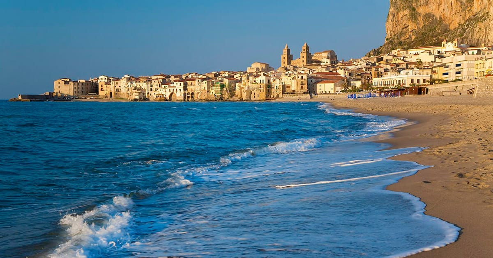
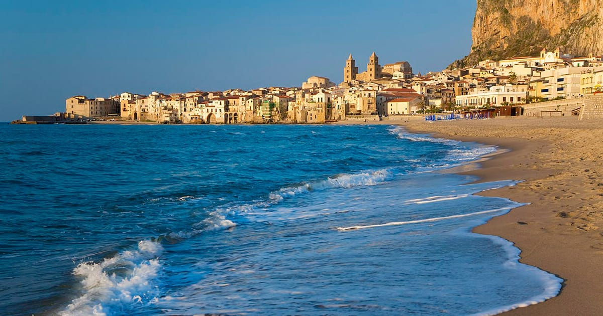
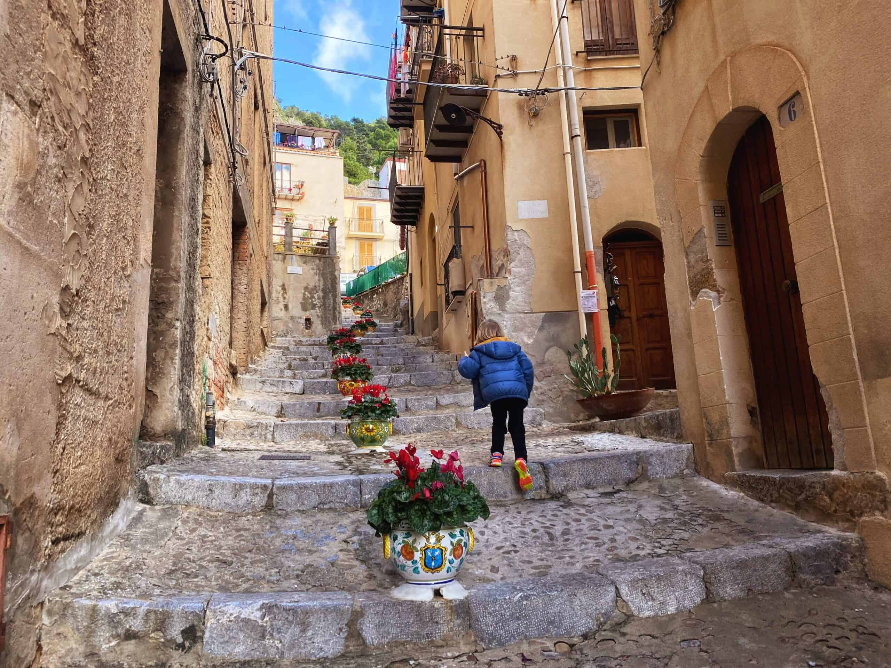
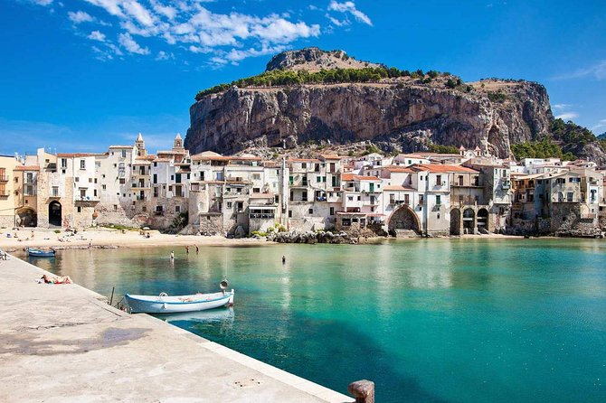
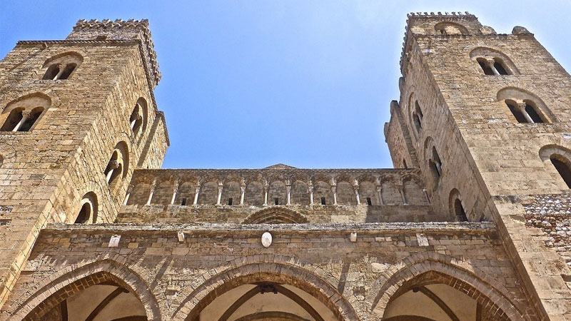
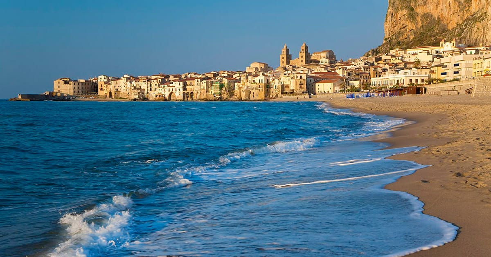

{kind=link}
 
Cefalú is a small Italian village along the northern coast of Sicily. The town consists of many iconic and beautiful beaches and views, dominated by the Tyrrhenian sea. That is not all it has to offer! There are cliffs and and mountains with medieval churches and towers, and even more shops and restraunts to explore. It is east of Palermo city and first appeared in history about 395 B.C. It is most famous for its iconic cathedral, built in 1131. Despite the old age of the cathedral, it is well preserved and the interior is considerably restored. Click on the image of the Cathedral below to learn more. Cefalú served as a melting pot of culture and civilization and this is evident in the ancient cathedral. A mixture of Norman and Byzantine elements, the structure stands tall in
 
Cefalú Beach is a popular white sand coast-line located along the Tyrrhenian sea. What makes this beach so special opposed to other Sicilian beaches is that many others are pebble beaches. It has free public areas along with private paid areas called lidos. Businesses rent spaces on the beach along with lounge chairs, umbrellas, toilets, and showers. However by law, each beach has to offer a public, free of charge, section. The beach view is accompanied with rows of buildings and mountains, making it all the better. Personally, my favorite part of this beach was the pier. With enough balance, you can stand on the posts of the pier and jump out into the water below.

Ristorante Galleria Cefalú
Galleria Cefalù is a modern Italian restaurant with an outdoor patio that offers stunning views of the city. For food, their menu features creative Mediterranean dishes that are based on masterful reinterpretations of traditional dishes. Their ingredients are always fresh and they use only the best quality found in Italy. In addition to their delicious fare, Galleria Cefalù also has a variety of events going on throughout the year including poetry readings and temporary art exhibitions.
Ristorante La Brace Cefalú
Ristorante La Brace serves up traditional Italian dishes with a southern flair. With stone arches and glass lights, the restaurant has a romantic atmosphere that is perfect for special occasions. Thea de Haan opened the restaurant in 1976, and her cuisine is firmly rooted in Sicilian culinary traditions.
Sutt'a Rávia
Sutt'a Ràvia is a small trattoria with a focus on fresh seafood. The pasta is of excellent quality, and the crudités (pickled vegetables) from the sea are delicious. The staff are polite and professional, and the place has a pleasant atmosphere.
Al PorticcioloAl Porticciolo is a unique and charming seafood restaurant with breathtaking views of the Cefalus coastline. It serves Sicilian meat and fish plates as well as creative pizzas, all with an emphasis on delicious local ingredients. In the summer months its picturesque terrace is perfect for enjoying stunning views of the coast, while in winter its interior dining rooms are warm and inviting